Réseau monophasé
Une tension simple (V) : mesurée chacune entre une phase et le neutre.
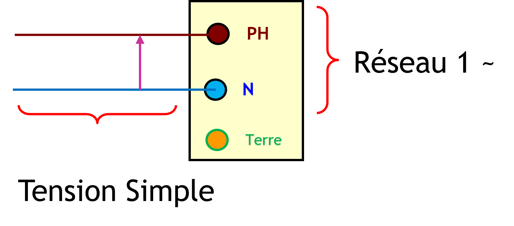
Vidéo explicative
Ajoutez ici votre lien vidéo pour expliquer visuellement cette partie du cours.
Courant Alternatif Vs Courant Continu
Le courant alternatif change de sens régulièrement. C’est le courant utilisé dans les réseaux électriques domestiques.
Le courant continu circule dans un seul sens. On le retrouve dans les batteries, les piles et certains appareils électroniques.
Représentation
La tension alternative simple varie au cours du temps. Elle passe par des valeurs positives et négatives autour de zéro.
Le courant alternatif change de sens et de valeur de façon périodique. En représentation graphique, on voit directement l’évolution de la tension dans le temps, alors qu’en représentation cartésienne on lit plus facilement les axes et les valeurs pour comprendre l’amplitude et la période.
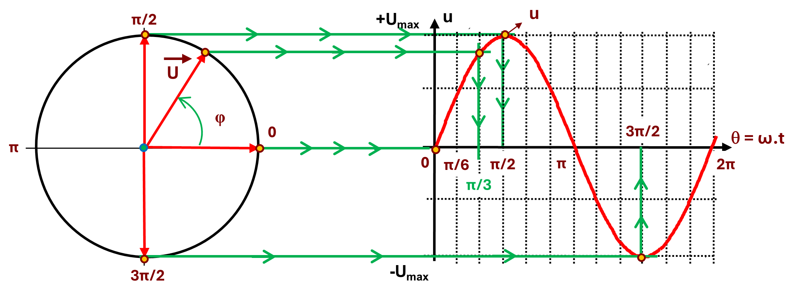
Vidéo explicative
Ajoutez ici votre lien vidéo pour expliquer visuellement cette partie du cours.
Tension maximale vs tension efficace
La tension maximale Umax est la valeur la plus haute atteinte par la tension alternative. La tension efficace Ueff est la valeur équivalente utilisée pour décrire son effet réel dans un circuit.
On retient souvent la relation Ueff = Umax / √2 pour passer de la valeur maximale à la valeur efficace.
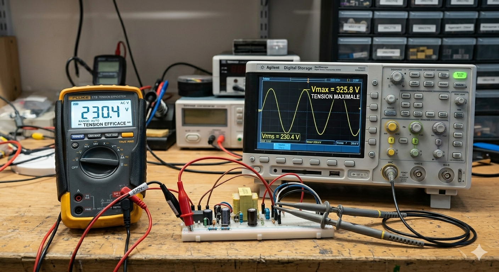
Intensité maximale vs intensité efficace
L'intensité maximale Imax est la valeur la plus haute atteinte par le courant alternatif. L'intensité efficace Ieff est la valeur équivalente utilisée pour décrire son effet réel dans un circuit.
On retient souvent la relation Ieff = Imax / √2 pour passer de la valeur maximale à la valeur efficace.
Les puissances
En courant alternatif, on distingue trois types de puissance: active, réactive et apparente. Elles sont liées entre elles dans le triangle des puissances.
C'est la puissance utile transformée en travail ou en chaleur. Son unité est le watt (W).
Elle circule entre la source et les dipôles réactifs (bobine, condensateur). Son unité est le volt-ampère réactif (var).
C'est la puissance totale fournie par la source. Son unité est le volt-ampère (VA).
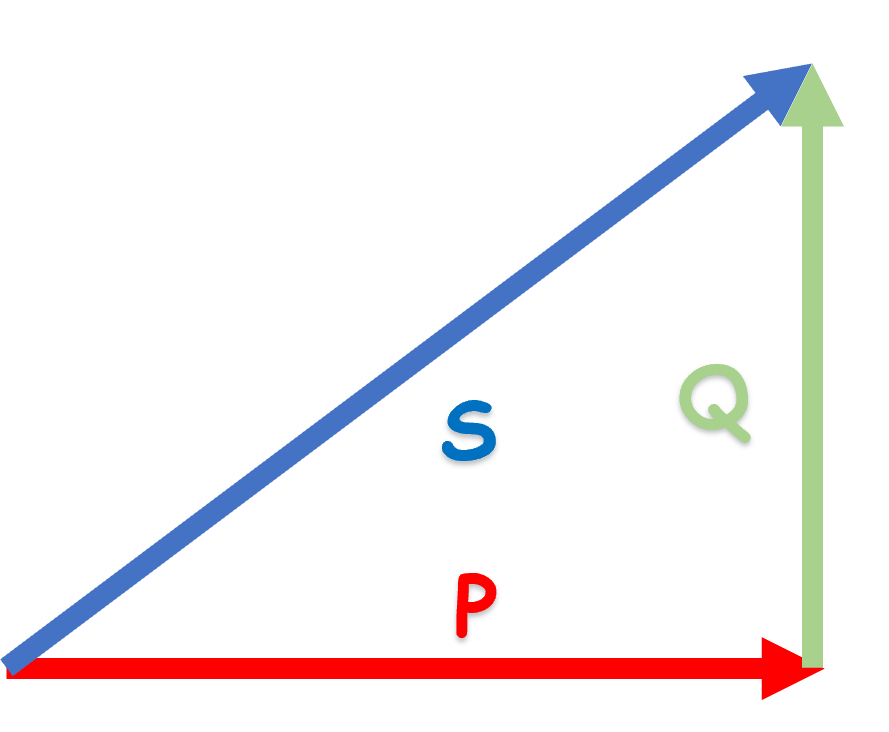
Relations utiles
Charge résistive
Les charges résistives sont celles où l'électricité produit de la chaleur par effet Joule et non du mouvement.
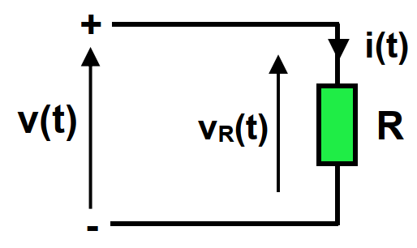
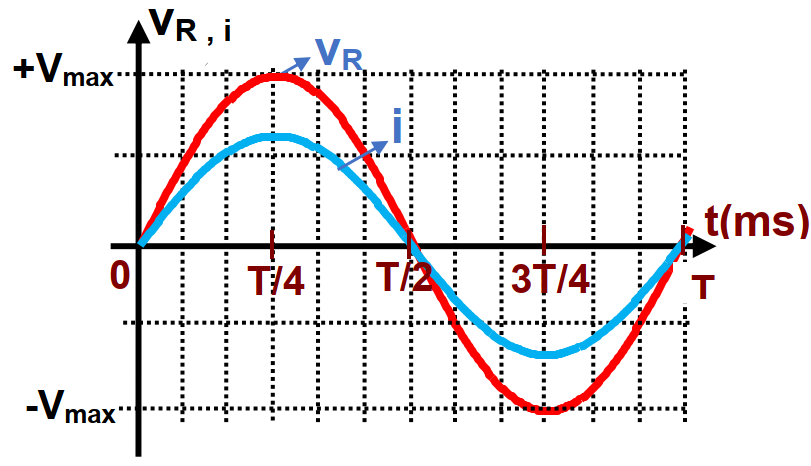
Diagramme de Fresnel
V = R . I
Z = R
φR = 0
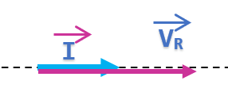
Charge inductive
Les charges inductives sont celles dans lesquelles l'électricité circule au travers de bobines et induisent un courant réactif plus ou moins important, lequel courant réactif sert uniquement à la magnétisation des circuits.
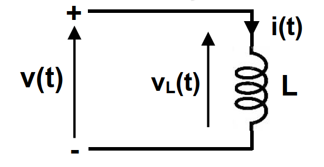
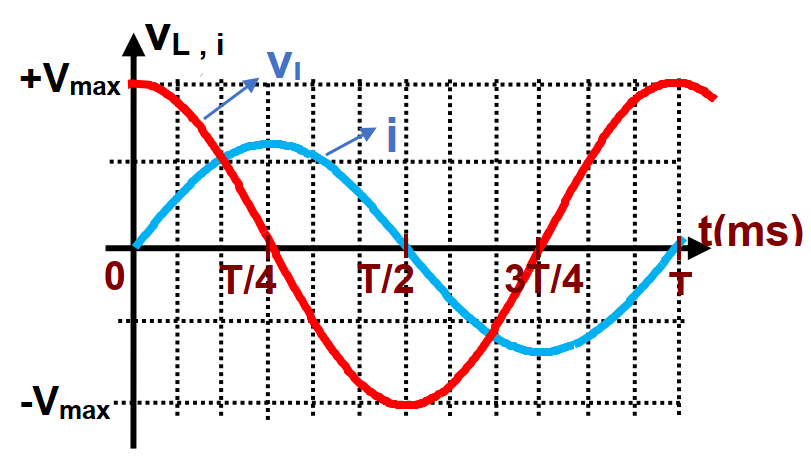
Diagramme de Fresnel
V = Z . I
Z = Lω
Z = XL
φL = +π/2
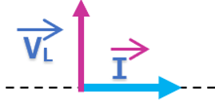
Charge capacitive
Les charges capacitives sont celles dans lesquelles l'énergie est stockée dans le champ électrique du condensateur, ce qui provoque un déphasage entre la tension et le courant.
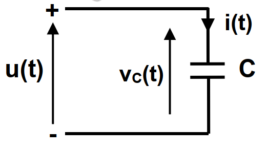
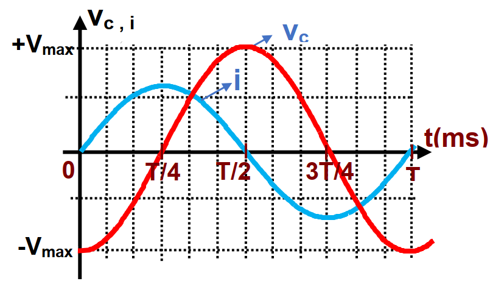
Diagramme de Fresnel
V = Z . I
Z = 1 / Cω
Z = XC
φC = -π/2
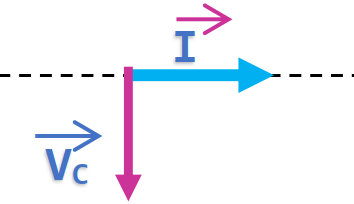